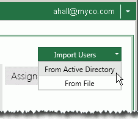
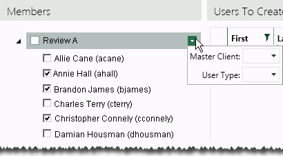
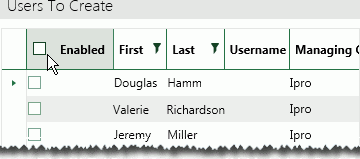

Get started:
-
Ensure that you have needed details for the users you will be creating:
-
Active Directory domains/groups to which these users belong.
-
Managing client and user type needed for users (per Active Directory domain or group). Although user configuration, including these settings, can be completed later, doing so now allows you to apply settings to multiple new users at one time.
-
-
On your site’s Eclipse website, log in as a user who is a member of the Super Admin group.
-
Click the Eclipse button,
 ,
and select Administration.
,
and select Administration. -
If the System Administration pane is collapsed, click the pane title to expand it.
Click Users.
Above the Assigned Groups area on the right of the Users tab, select From Active Directory, as shown in this figure.

In the Active Directory section of resulting dialog box:
-
For each domain/group containing users to be created in Eclipse, click to expand the list until the Members option is visible.
-
Click the needed Members options to list those users in the center (Members) section of the Eclipse dialog box.
In the Members section, select the users to be created in Eclipse.
|
|
For efficient configuration, select only users in a single group who will be assigned the same Eclipse user type and managing client. That is, if you are adding ten members of an Active Directory group, and half of them will be Eclipse user type “Billable” and managing client “NASA,” then select just those five users. |

Assign managing client and optionally user type as follows:
-
In the Members area, click corresponding to the group containing the selected users:

-
From the drop-down lists, select the needed Managing Client and optionally User Type. These selections will be applied to all selected users in the group.
-
In addition to or instead of completing step b, you can change/choose a managing client for individual users. To do so, in the Users to Create list, double click the user’s Managing Client field and select the needed managing client. Optionally, double-click the corresponding User Type field and select the needed type.
Review the Users to Create list to ensure it is correct.
To remove someone from the list, clear the option in the Members section of the dialog box.
If any of the users should be disabled initially, clear the Enabled option. Disabled users cannot log in to Eclipse.
To initially disable all of the users, clear the Enabled box at the top of the list, as shown in the following figure.

|
|
You can filter the Users to Create list by clicking for the column you want to filter. Select existing column entries or define more complex criteria in the filter dialog box. Filtering the list does not limit the import. If you complete the import, all selected users will be imported, not just those visible (based on a filter). |
When all needed users have been added, click Import Users.
Repeat these steps to add other users from Active Directory.
Inform users of their Eclipse log-in names and passwords.